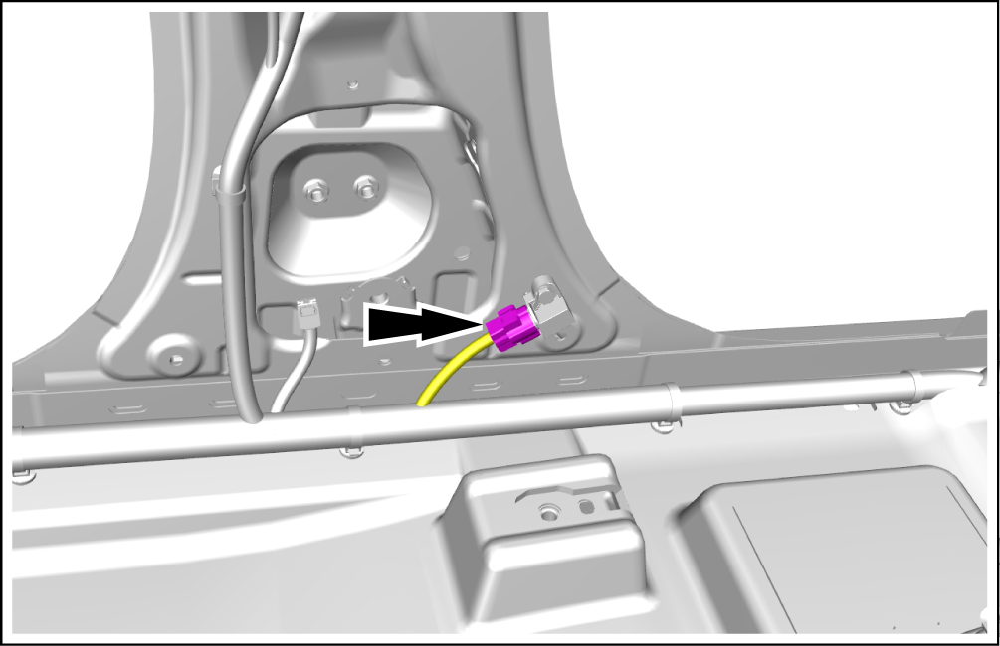
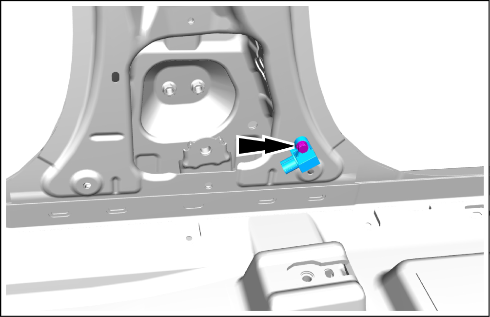

Side Impact Sensor - Removal and Installation
Removal


-
The safety protection system (SRS) can still work for a period of time after the power is disconnected. Wait at least 3 min before disassembling or removing any SRS component.
-
Ensure that the vehicle electrical system is completely powered off and that no other power source is connected.
-
If any SRS part falls, or if any cracks, dents or other defects are found, replace it with a new one.
-
Do not use SRS parts from other vehicles. New parts must be used during replacement.
-
Do not expose any SRS parts to high temperatures or open flames directly.
-
Remove the left B-pillar lower guard assembly. See Left B-Pillar Lower Guard Assembly - Removal and Installation
-
Disconnect the side impact sensor connector.
 -
Remove 1 fixing bolt, and take out side impact sensor.
-
Tightening torque: 9N • m
 -
Installation
-
The installation steps are opposite to the removal steps.